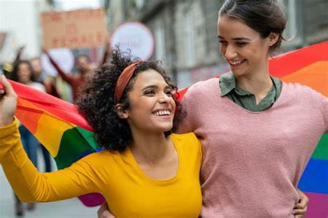
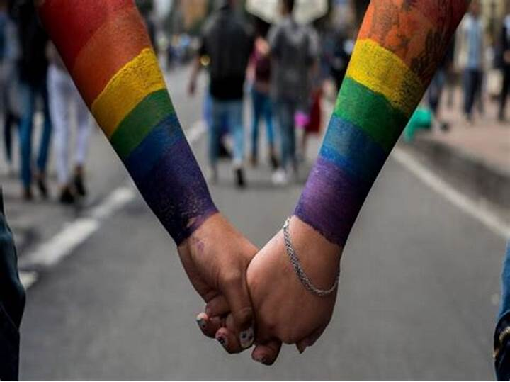
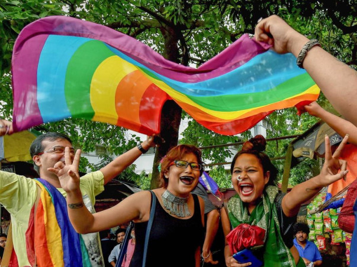

In a world filled with judgement and complexities, it is crucial for one to find a safe haven. A place, a group, or just simply a person wherein one is able to truly express themselves without having to worry about being judged. The LGBTQIA+ community is able to serve as a safe place for its members. It brings comfort towards them because the people are supporting one another without judgement. One is able to truly express their true identity with the members of the community. Moreover, this community promotes positivity and inclusivity. The existence of this community alone provides reassurance not only to its members, but to every single person in this world, that we are to leave our toxic beliefs in the past as we advance into the future. Lastly, through this community, we are able to see the beautiful stories and legacies that each one creates with a rainbow mark. The beauties of the journey and the satisfaction of one after coming out is a hectic but ecstatic journey shared with each one. These stories are starring so beautifully as it inspires other people to be true to themselves. What this community yearns is to become a symbol of inclusivity while simply just supporting and promoting love inside of its scope.
BEAUTY OF THE COMMUNITY


